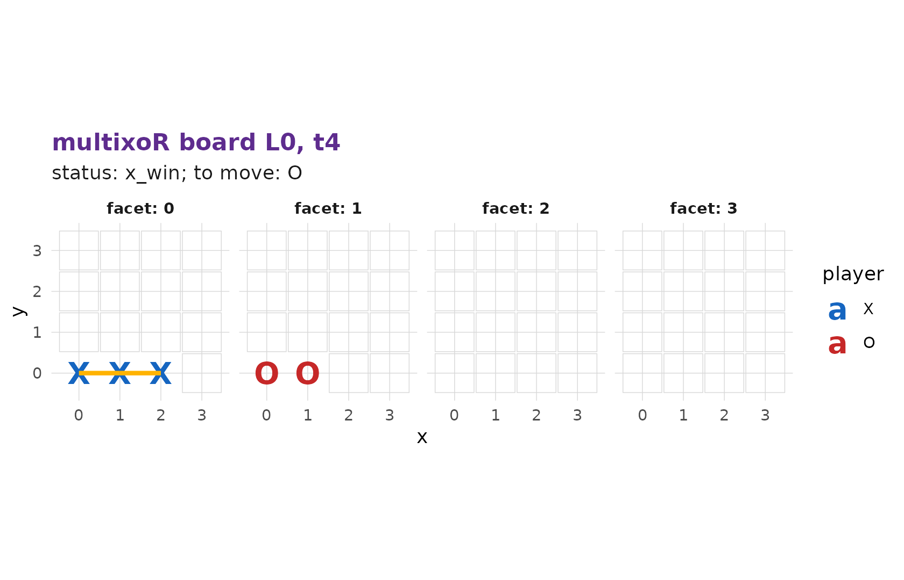
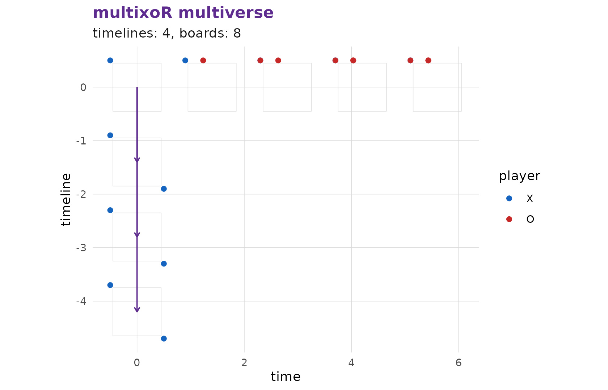
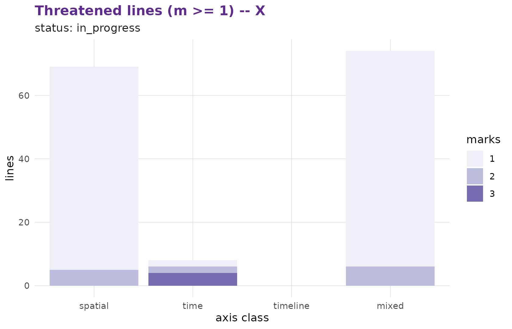

4. Winning across space, time and timelines
Source:vignettes/articles/tutorial-4-winning.Rmd
tutorial-4-winning.RmdYou now know how to play present moves (part 2) and how to branch (part 3). This page is the heart of the game: how you win.
The win condition
A player wins by completing a straight line of k = 3 of
their own marks along any of the game’s axes or
diagonals. A “direction” is a 5-vector with entries in
{-1, 0, +1} (excluding all-zero), canonicalised so the
first non-zero component is positive. In five axes there are
\frac{3^5 - 1}{2} = 121
such canonical directions:
nrow(multixoR:::.mxo_directions(3L))
#> [1] 121Because a line can mix the spatial, time, and timeline axes, multixoR
sorts winning (and threatening) lines into four axis
classes: spatial, time,
timeline, and mixed.
The placement-anchored rule
One subtlety is essential (rules section 5.2.1). When you place a mark, it exists on that board and propagates forward to later boards in the same timeline. But a win must pass through your most recent placement – propagated cells alone never declare a win. This is why you cannot simply let a mark “ride forward” through time to complete a line for free: the line has to be anchored by the move you just made.
A spatial win
The simplest win is three in a row along a single spatial axis on one
board. Here X builds the x-row
(0,0,0)-(1,0,0)-(2,0,0) while O plays elsewhere:
s <- mxo_new_game()
s <- mxo_move(s, "present", 0L, 0L, 0L) # X (0,0,0)
s <- mxo_move(s, "present", 0L, 1L, 16L) # O elsewhere
s <- mxo_move(s, "present", 0L, 2L, 1L) # X (1,0,0)
s <- mxo_move(s, "present", 0L, 3L, 17L) # O elsewhere
s <- mxo_move(s, "present", 0L, 4L, 2L) # X (2,0,0) -> completes the line
mxo_status(s)
#> $status
#> [1] "x_win"
#>
#> $winner
#> [1] 1
#>
#> $win_line
#> $win_line[[1]]
#> $win_line[[1]]$L
#> [1] 0
#>
#> $win_line[[1]]$t
#> [1] 4
#>
#> $win_line[[1]]$idx
#> [1] 0
#>
#>
#> $win_line[[2]]
#> $win_line[[2]]$L
#> [1] 0
#>
#> $win_line[[2]]$t
#> [1] 4
#>
#> $win_line[[2]]$idx
#> [1] 1
#>
#>
#> $win_line[[3]]
#> $win_line[[3]]$L
#> [1] 0
#>
#> $win_line[[3]]$t
#> [1] 4
#>
#> $win_line[[3]]$idx
#> [1] 2The status reports x_win for player 1. The winning line
was completed on the board at t = 4 (the moment of the
final placement), and mxo_plot_board() highlights that line
for a finished game:
mxo_plot_board(s, L = 0L, t = 4L)
A timeline win
Now the move that has no analogue in ordinary tic-tac-toe: a win
along the timeline axis. It requires three placements
at the same (t, idx) on three adjacent timelines.
We branch from the empty opening board at the same corner cell three
times:
w <- mxo_new_game()
w <- mxo_move(w, "present", 0L, 0L, 0L)
w <- mxo_move(w, "present", 0L, 1L, 1L)
w <- mxo_move(w, "branch", 0L, 0L, 63L) # X into L1 corner
w <- mxo_move(w, "present", 0L, 2L, 16L)
w <- mxo_move(w, "branch", 0L, 0L, 63L) # X into L2 corner
w <- mxo_move(w, "present", 0L, 3L, 17L)
w <- mxo_move(w, "branch", 0L, 0L, 63L) # X into L3 corner -> timeline win
mxo_status(w)$status
#> [1] "x_win"The three corner marks sit at the same spatial cell on timelines 1, 2
and 3 – a line straight along the L axis. The multiverse
view shows them stacked across parallel universes:

The remaining classes: time and mixed
time-axis and mixed lines exist too – a
time line runs through the same cell across successive
boards, and a mixed line combines spatial steps with time
and/or timeline steps. Because of the placement-anchored rule above,
constructing these by hand takes care, but the engine detects all five
classes with the same machinery. The practical way to see them coming is
to watch your threatened lines.
Reading threats
mxo_plot_threats() counts, per axis class, how many
lines a player has partially completed – the lines that could become
wins. Watching this for both players is the core of multixoR
strategy:
g <- mxo_example_game()
mxo_plot_threats(g, player = 1L, min_marks = 1L)
We turn those threats into actual strategy – and hand the job to the built-in AI – in the next page.
Previous: 3. Branching into the past | Next: 5. Strategy, evaluation and AI →